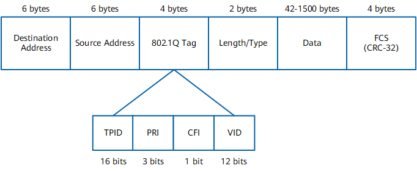

Definition
Each VLAN on a LAN is identified by a unique VLAN tag, which is also called an 802.1Q tag.
Format
IEEE 802.1Q adds a 4-byte 802.1Q tag between the Source Address field and the Length/Type field of an Ethernet frame. Figure 1 shows the VLAN-tagged frame format defined in IEEE 802.1Q.
Figure 1 VLAN-tagged frame format defined in IEEE 802.1Q
An 802.1Q tag contains four fields:
- Tag protocol identifier (TPID): determines whether a VLAN frame carries an 802.1Q tag. This field is 16 bits long and defaults to 0x8100, which indicates an 802.1Q-tagged frame. A device that does not support 802.1Q discards 802.1Q-tagged frames.
Device vendors can define their own TPID values. When the TPID value of a neighbor device is set to a value other than 0x8100, the TPID value of the local device must be changed to that of the neighbor device. This enables the local device to identify the frames sent by, and communicate with, the neighbor device.
- Priority (PRI): indicates the frame priority. This field is 3 bits long and its value ranges from 0 to 7, with a larger value indicating a higher priority. If network congestion occurs, a device preferentially sends frames with a higher priority.
- Canonical Format Indicator (CFI): indicates whether a MAC address is encapsulated in canonical format. This field is 1 bit long and can be set to 0 or 1 (0 by default). The value 0 indicates that the MAC address is encapsulated in canonical format while the value 1 indicates non-canonical format.
- VID: indicates the VLAN to which a frame belongs. This field is 12 bits long and the value ranges from 0 to 4095. The values 0 and 4095 are reserved, and therefore available VLAN IDs are in the range from 1 to 4094.
Frame Types
Each 802.1Q-capable device identifies the VLAN to which a frame belongs based on the VLAN ID, and processes the frame based on whether it carries a VLAN tag and the specific VLAN tag value. Frames are classified into the following types based on whether they carry VLAN tags:
- Tagged frame: a frame with a 4-byte 802.1Q tag
- Untagged frame: an original frame without a 4-byte 802.1Q tag
In most cases, devices process tagged and untagged frames differently:
- User hosts, servers, hubs, and unmanaged switches can only send and receive untagged frames.
- Switches, routers, firewalls, and access controllers (ACs) can send and receive both tagged and untagged frames.
- Voice terminals can send and receive the tagged or untagged frames of only one VLAN.